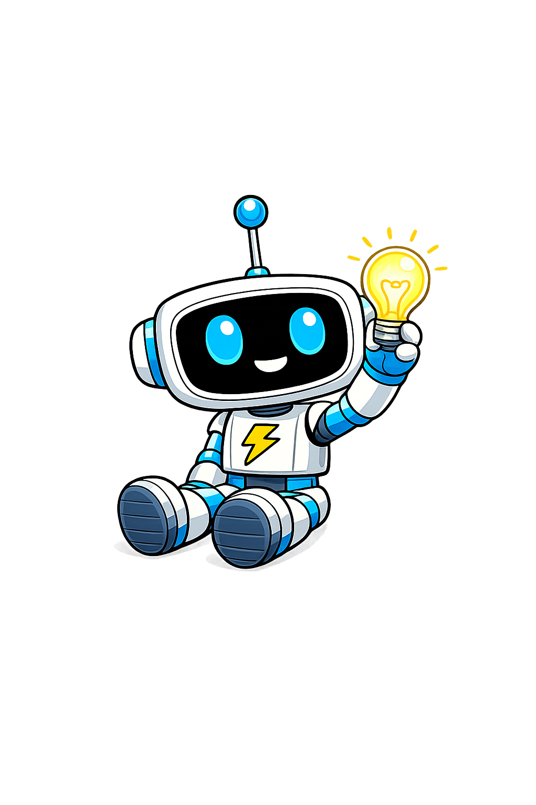
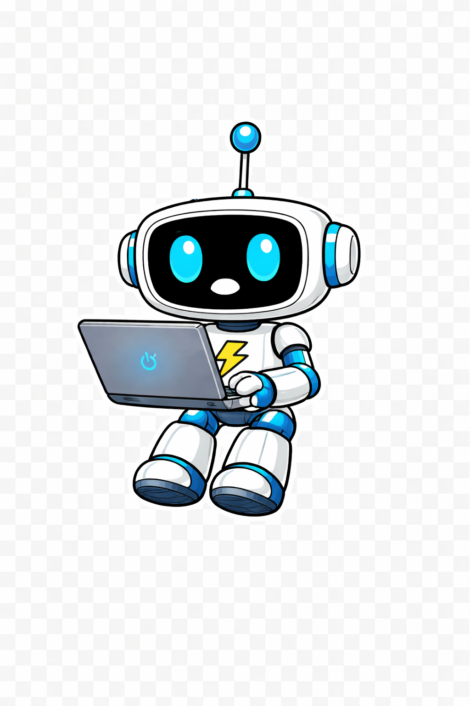

I'm Richie Barden — applying for the Managing Consultant role. Instead of a cover letter, I built a working demo of the structuring approach I'd bring to your engagements, mapped two real case studies against the responsibilities in the posting, and scored myself honestly against your requirements. It took me a Friday. It should take you 3 minutes to read.

I built this to mirror what a consultant does in the first 48 hours of an engagement: take a fuzzy problem and impose structure on it. Pick a scenario, click Run, and watch it decompose the problem, generate hypotheses, plan the analysis, and quantify value — the same sequence I'd walk through with a BRG client on day two.

You'll see a structured consulting breakdown appear in four stages — the same structure I'd deliver to a partner on day two of a BRG engagement.
In January I decided to learn AI by building real things in public. What started as "make a newsletter" turned into a six-workstream program — content, brand, web platform, product (3D-printed hardware), community, and internal tooling — all delivered solo with AI as my co-consultant. I ran it the way I'd run a client engagement: problem statement, workstreams, value hypothesis, PMO, and change management. Here's the scorecard.
No AI engineering experience, no video production experience, no 3D design experience. Goal: rebuild deep fluency in 90 days by doing, not reading. Needed a framework that didn't collapse under ambiguity.
Tested via observable outputs: shipped newsletter, website in production on Vercel, 19 custom AI skills deployed, physical product on Etsy, 30+ social posts. Proof of velocity, not proof of polish.
Rather than one-off prompts, I built a skill library: newsletter-editor, launch-hype, content-calendar, mastermind (problem decomposition), ai-skills-review (post-project self-assessment), etc. This is the same instinct you'd want on a BRG engagement: don't solve the problem once — extract the reusable asset.
Translation for BRG: the value of an AI consultant isn't knowing which model to use — it's knowing how to decompose the client's workflow into the shape AI can execute, and how to build the human-in-the-loop feedback loop that keeps it honest. That's a consulting skill, not an ML skill.
I invented a plausible BRG client engagement and walked through my approach end-to-end. Client context below is fictional; the analytical structure is what I'd actually deliver on week one. This is the page I'd want my Engagement Lead to see on day five, if I were running this workstream.
$450M revenue, 6 production facilities, 2,400 employees. Board-level pressure to "do something about AI" after competitor announced digital transformation partnership. CEO asked: "Where should we actually invest — and what do we stop doing to fund it?"
Deliverables: (1) AI opportunity landscape mapped to our operating model, (2) prioritized portfolio with quantified business cases for top 5, (3) year-one implementation roadmap with change management plan, (4) board-ready narrative.
My bet before any analysis: demand forecasting + trade-promo optimization + predictive maintenance will pencil out. Everything else is a year-two conversation. This is a testable hypothesis, not an opinion — the week-two model either confirms or kills it.
In F&B manufacturing, a demand planner with 15 years of tenure is the biggest adoption risk. Any model recommendation that overrides tribal knowledge without earning trust gets ignored. My week-one instinct: design the UX so the planner approves the model's call — not the other way around. The org chart decides ROI more than the model does.
I pulled the responsibilities straight from your posting and rated myself on each — four dots = strong evidence, three = real experience, two = stretch. Everything is linked to evidence on this site. No fluff.
The honest summary: I'm exactly the profile for this role, except I've been doing it internally instead of externally. Everything in the JD maps to something I've shipped or am shipping right now. The one gap — client-facing consulting — is the kind of gap that closes in a quarter when you're already doing the work.
The fastest way to evaluate someone for this role is to see how they think. You've now seen that. If there's a real engagement where this pattern of thinking would help, I'd love to talk — and if you're curious how I'd build the live API version of the demo, that's an even better conversation.